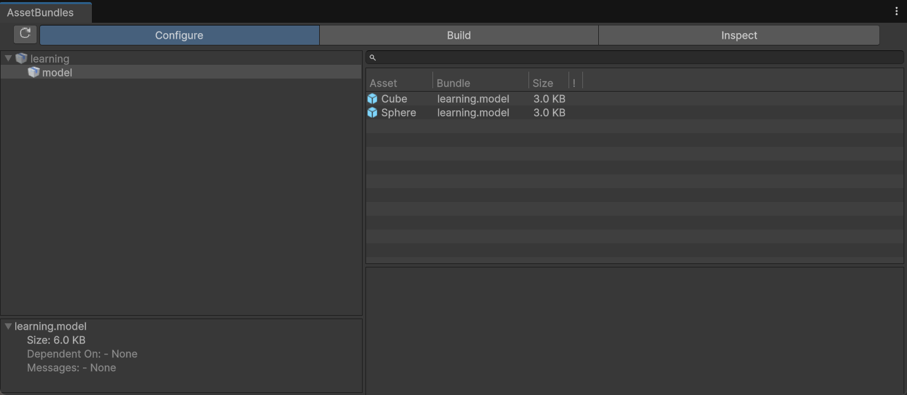
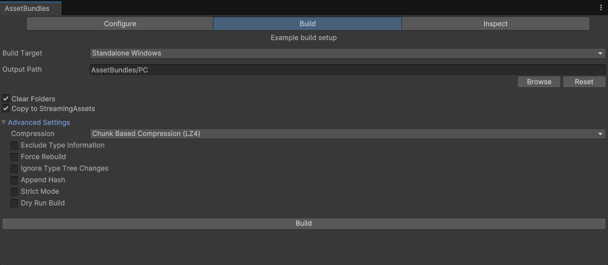

AssetBundle
AssetBundle（AB 包） 是 Unity 提供的跨平台资源归档压缩格式，可将项目内各类游戏资源序列化打包为独立外部文件，脱离主程序集独立存储，核心用于实现安装包瘦身、资源模块化、按需加载、远程热更、跨平台资源隔离。
AssetBundle 的核心作用
- 资源分离与按需加载
游戏初始安装包仅保留核心代码、基础配置、通用核心资源，关卡资源、角色皮肤、特效、拓展剧情、DLC 等非刚需资源独立打包为 AssetBundle，运行时按需下载、动态加载，大幅缩减初始包体体积，降低用户下载门槛与设备存储占用。 - 动态资源热更新
无需重新上架应用商店、整包发包，通过服务器差分更新、替换远端 AssetBundle 文件，即可完成资源修复、美术迭代、新增玩法内容、配置微调、贴图替换等迭代需求，有效缩短版本更新周期，控制运营更新成本。 - 资源复用与内存管控
统一管理公共依赖资源，多场景、多预制体、多物件可共享同一 AssetBundle 内的贴图、Shader、材质、图集等资源，避免资源冗余打包与重复加载，减少显存、内存冗余占用，优化整机运行性能。 - 跨平台资源差异化适配
支持根据 Windows、Android、iOS、主机等不同平台，单独打包对应规格的 AssetBundle，适配各平台专属纹理压缩格式、音频编码、硬件性能限制，统一项目多端资源管理流程。 - 资源加密与权限管控
原生支持文件自定义后缀、数据压缩，结合自定义加密算法、校验机制，可对 AssetBundle 资源进行加密处理，防止美术资源、配置数据被非法提取、篡改，保护项目版权与游戏数据安全。 - 资源分级加载与流程解耦
将静态资源、动态资源、临时资源进行模块化拆分，区分常驻资源、临时资源、一次性资源，配合加载队列、优先级配置，优化游戏启动、场景切换、战斗流程的资源加载节奏。
AssetBundle 的基本概念
- Bundle 文件：序列化后的资源实体文件，默认后缀
.unity3d，支持自定义为.bundle、.res或无后缀格式；文件内部包含序列化资源二进制数据、资源引用关系、压缩标识、资源索引表。 - Manifest 文件：分为单包清单与全局总清单；单个 AssetBundle 对应独立
.manifest文件，项目打包后会生成平台级全局 Manifest；文件存储文件大小、CRC 校验码、MD5/哈希值、依赖列表、资源路径、打包时间戳等元数据，用于资源完整性校验、依赖检索、热更版本比对。 - 依赖关系：Unity 自动识别资源间层级引用依赖，材质依赖贴图与 Shader、角色预制体依赖模型网格与动画片段、场景依赖光照贴图与静态物件；依赖断裂会导致运行时资源丢失、材质失效。
- AssetBundle 标签：编辑器内为资源配置的专属打包标签，是划分打包分组、定制打包规则、批量构建 Bundle 的核心依据，相同标签资源会被聚合至同一个 AssetBundle。
- 变体 Variant：同一资源配置多套差异化资源变体，绑定同一 AB 标签，可根据设备性能、画质档位、分辨率，运行时动态切换高清/低配资源，适配高低配设备。
- 缓存机制：Unity 内部维护已加载 AssetBundle 缓存列表，重复加载同一路径 AB 包时，会直接复用内存中已存在实例，避免重复 IO 与内存重复分配。
常见的可打包资源类型
- 预制体（Prefab）
包含普通预制体、嵌套预制体、变体预制体、根节点空预制体；挂载的碰撞体、动画组件、粒子组件、脚本组件、物理配置等配置数据会同步序列化打包；仅挂载引用，托管脚本代码不参与打包。 - 纹理（Texture2D/Texture3D）
支持 PNG、JPG、TGA、EXR、PSD 等全部导入纹理资源，涵盖 Sprite 精灵图、法线贴图、高光贴图、光照贴图、立方体贴图、渲染贴图；可保留纹理压缩格式、Mipmap、重复模式、读写权限等导入配置。 - 模型（Mesh）
FBX、OBJ、GLB 等外部模型导入生成的网格资源、骨骼网格、LOD 模型、合并网格；同时包含骨骼绑定数据、顶点色、uv 数据、碰撞网格、骨骼绑定配置。 - 材质（Material）
自定义材质、标准材质、URP/HDRP 管线材质、多材质组合资源；完整保留 Shader 引用、贴图绑定、参数数值、渲染队列、混合模式、遮罩配置等全部参数。 - 音频（Audio Clip）
WAV、MP3、OGG、AAC 等主流音频格式，支持背景音乐、音效、人声、环境音；保留音频压缩等级、采样率、声道、循环模式、加载方式、空间音频配置。 - 动画（Animation Clip/Animator Controller）
普通动画片段、骨骼动画、顶点动画、状态机动画控制器、动画参数、混合树、动画层配置、avatar 骨骼映射资源、动画遮罩文件。 - 字体（Font）
系统导入ttf/otf 矢量字体、Unity 动态字体、字体图集、自定义字体材质、字体排版配置、字符映射表资源。 - 场景（Scene）
完整游戏场景文件，包含场景静态标记、光照数据、烘焙配置、雾效设置、后处理配置、场景内物件引用关系；场景打包为独立 Bundle，不可与普通资源混编。 - 文本 / 数据文件
JSON、XML、CSV、TXT、二进制配置表、本地化文本、表格数据、自定义配置文件；全部以 TextAsset 类型序列化存储，支持自定义二进制资源读取。 - Shader 变体集合（Shader Variant Collection）
预收集的 Shader 变体组合、管线专用 Shader 集合、 Keyword 变体配置，用于裁剪无效变体、缩减 Shader 加载耗时、减少运行时编译卡顿。 - 渲染管线资源
URP/HDRP 管线配置、渲染管线资产、后处理配置文件、调色盘、雾效配置、光照探针数据、烘焙光照资源。 - 其他资源
视频剪辑、粒子系统配置、导航网格数据、寻路配置、物理材质、关节配置、地形资源、地形贴图、烘焙光影数据、SpriteAtlas 图集资源。
注意不能直接打包的内容
- C# 原生脚本（.cs）：脚本文件为源代码，打包时已编译为 IL 代码嵌入程序集，无法单独序列化打包至 AssetBundle，所有逻辑脚本必须内嵌在主包程序集中。
- 托管程序集（.dll）：常规第三方 DLL、游戏业务程序集无法通过 AB 打包分发；仅可依靠热更框架实现动态代码更新，原生 AB 不支持代码热更。
- 编辑器专属资源：Editor 目录下专属脚本、编辑器工具、自定义窗口、打包配置文件、.unitypackage 资源、项目全局设置、编译缓存文件。
- 引擎核心内置资源：Unity 原生内置 Shader、基础系统组件、引擎默认配置、全局质量设置、输入管理配置等底层引擎资源。
- 未序列化资源与运行时动态生成资源：代码动态创建的网格、纹理、贴图、临时内存数据、运行时实例化物件，无法提前打包为静态 AssetBundle。
- 加密受保护资源：系统级加密文件、受版权保护的第三方音视频、加密字体等受限资源，序列化打包后会出现解析失败。
- 空资源与无效引用资源：无任何数据的空文件、丢失引用的破损资源、重复冗余废弃资源，打包后会产生无效碎片文件，增大包体且无法正常加载。
AssetBundle Browser
在项目根目录packages/manifest.json中加入"com.unity.assetbundlebrowser": "1.7.0"
Configure

Build

1. Build Target（构建目标平台）
决定 AssetBundle 适配的运行平台，不同平台（如 Windows、Android、iOS 等）的资源加载机制、文件格式有差异 。需根据实际发布平台切换。
2. Output Path（输出路径）
设置 AssetBundle 文件生成到项目中的位置，方便归类管理不同平台、不同用途的 Bundle 包，可点击 Browse 自定义路径。
3. Clear Folders（清空文件夹）
构建前，会删除输出路径下已有文件，避免残留旧版本 Bundle，保证新构建的包是 “干净” 的。
4. Copy to StreamingAssets（复制到流资产目录）
勾选后，构建出的 AssetBundle 会自动拷贝到 StreamingAssets 文件夹（该目录资源随游戏安装包发布，运行时可读取），方便测试本地加载逻辑；若资源需动态从服务器下载，可按需关闭。
5. Advanced Settings（高级设置）
Compression（压缩方式）
- No Compression（不压缩）：Bundle 体积大，但加载速度最快，适合体积小、需高频加载的资源（如 UI 预制件）。
- Standard Compression (LZMA)：高压缩比，Bundle 体积小，但首次加载需解压整个包，耗时久；适合整包下载、不常动态更新的资源（如游戏初始场景资源）。
- Chunk Based Compression (LZ4)：压缩比介于前两者之间，支持 “按块解压”，加载时可按需解压部分资源，平衡体积和加载效率，是动态更新场景 / 资源的常用选项。
Exclude Type Information（排除类型信息）
减少 Bundle 里序列化数据的类型元信息，降低体积；但如果不同 Bundle 有复杂依赖，或需动态创建类型实例，可能引发兼容问题，需谨慎用。
Force Rebuild（强制重建）
不管资源是否变动，强制重新构建所有标记的 AssetBundle，确保输出最新版；适合资源频繁修改、需严格把控版本时开启。
Ignore Type Tree Changes（忽略类型树变更）
忽略序列化数据的类型结构小改动，加速构建；若资源类型定义（如脚本组件字段增减）有实质变化，建议关闭，避免旧数据不兼容。
Append Hash（附加哈希值）
在 Bundle 文件名后加哈希码（如 xxx_abc123 ），方便通过文件名识别版本，结合服务器校验资源是否更新，常用于热更新流程。
Strict Mode（严格模式）
开启后，构建时更严格校验资源依赖、序列化问题，遇到潜在错误会报错终止构建，适合规范项目流程、提前暴露问题。
Dry Run Build（模拟构建）
只执行构建前的校验、依赖分析等流程，不实际生成 Bundle 文件，快速排查配置错误（比如依赖缺失、压缩参数冲突）。
Inspect
检查AssetBundle打包情况
AssetBundle资源的使用
同步加载
同步加载在主线程执行，加载过程会阻塞主线程，适用于小体积资源、初始化阶段或非性能敏感场景，大资源同步加载易造成游戏卡顿、掉帧。
- 加载AB包
- 加载AB包中的资源
建议用泛型加载或 Type 指定类型，避免同名不同类型资源导致加载错误、资源引用异常
- 性能要点：
- 同步加载属于阻塞式 IO，频繁使用会大幅降低运行流畅度，禁止用于中大型资源加载；
- 路径拼接优先使用
Path.Combine提升跨平台兼容性与代码健壮性。
1 | |
异步加载
异步加载在后台线程执行，不阻塞主线程，是项目正式环境的标准加载方式，可有效避免卡顿，适配所有资源类型，尤其适合纹理、模型、场景等大体积资源加载。
- 性能要点：异步加载采用非阻塞 IO，资源加载效率更高；
- 支持加载队列管理与优先级调度，可控制并发加载数量，降低 CPU 与 IO 压力；
- 异步请求支持中断与进度监听，适配加载界面逻辑。
1 | |
AssetBundle的卸载
资源卸载是内存管理核心环节，错误卸载会导致内存泄漏、材质丢失、场景紫球等问题，是性能优化与内存管控的关键节点。
1 | |
-
true：强制卸载 AB 包与所有通过其加载的资源，已实例化对象会丢失资源，仅适用于确定资源永久不再使用的场景，易引发渲染异常。 -
false：仅卸载 AB 包文件句柄与索引数据，保留已加载到内存的资源实例，是切换场景、释放文件占用的安全方案，可避免资源丢失，降低异常风险。 -
性能要点：
- 卸载后及时调用
Resources.UnloadUnusedAssets()并触发 GC，彻底清理无引用资源，回收内存。 - 禁止频繁调用
Unload(true)，避免资源重复加载造成的性能损耗。 - 切换场景时统一执行批量卸载，减少碎片化卸载带来的 IO 开销。
- 常驻内存的核心 AB 包（如公共 Shader、UI 图集）无需频繁卸载，提升加载效率。
AssetBundle的依赖
资源间存在层级引用依赖（材质→纹理→Shader、预制体→动画→模型），目标资源加载前，必须完整加载所有直接与间接依赖包，否则会出现资源丢失、材质缺失、渲染异常等问题，依赖加载完整性直接决定资源加载成功率与运行稳定性。
利用主包获取依赖信息
- 加载平台级主清单 AB 包
- 加载主包中的
AssetBundleManifest资源 - 通过清单获取目标 AB 包的所有依赖
- 优先加载所有依赖包，再加载目标 AB 包
1 | |
- 性能要点：
- 依赖包支持异步并行加载，相比串行加载可显著降低总加载耗时。
- 清单文件只需加载一次，缓存后复用，避免重复 IO 与内存开销。
- 公共依赖包（Shader、通用纹理）加载后常驻内存，减少重复加载损耗。
- 依赖加载需做判空处理，防止缺失依赖包导致的程序异常。
- 热更场景下，依赖包需与主资源包同步校验版本，避免依赖不匹配。
含依赖的AssetBundle卸载
含依赖的 AssetBundle 卸载需遵循依赖引用计数管理、先卸载子依赖、后卸载主资源、公共依赖不强制释放的核心原则，避免因依赖包提前释放导致主资源丢失、材质失效、内存泄漏或渲染异常。
依赖包多为公共共享资源（Shader、通用纹理、基础材质），被多个主 AB 包同时引用，禁止直接使用强制卸载方式释放依赖包，否则会导致所有引用该依赖的资源全部失效。
卸载规则
- 非共享独立依赖：与主 AB 包绑定生命周期，主包卸载时同步卸载，采用
Unload(false)安全释放 - 公共共享依赖：使用引用计数管理，仅当所有引用该依赖的主包全部卸载后，再执行卸载操作
- 卸载顺序：先卸载主资源 AB 包 → 再卸载无引用的依赖 AB 包 → 最后清理内存闲置资源
- 强制卸载限制：含依赖的资源链严禁使用
Unload(true)，仅在确认全链路资源永久废弃时使用
卸载核心逻辑
- 卸载主包时优先使用
Unload(false)，保留已实例化的依赖资源，不影响场景内正常显示对象 - 公共依赖包卸载前校验引用计数，计数归零时再执行卸载，杜绝公共资源误删
- 卸载完成后统一调用闲置资源清理与 GC 回收，优化内存占用，避免内存碎片化
- 常驻公共依赖包（Shader 包、基础图集包）全程不卸载，提升高频加载性能
卸载性能要点
- 依赖包卸载避免频繁 IO 操作，采用批量集中卸载，降低系统开销
- 引用计数机制可有效防止依赖重复卸载与内存泄漏，是模块化资源管理标准方案
- 长生命周期场景（主界面、战斗场景）的依赖包，切换场景后统一卸载，提升运行效率
- 卸载后监控内存占用，及时回收无引用资源，防止显存与内存溢出
- 热更新场景中，依赖包卸载后需重新加载新版本，保证资源版本匹配